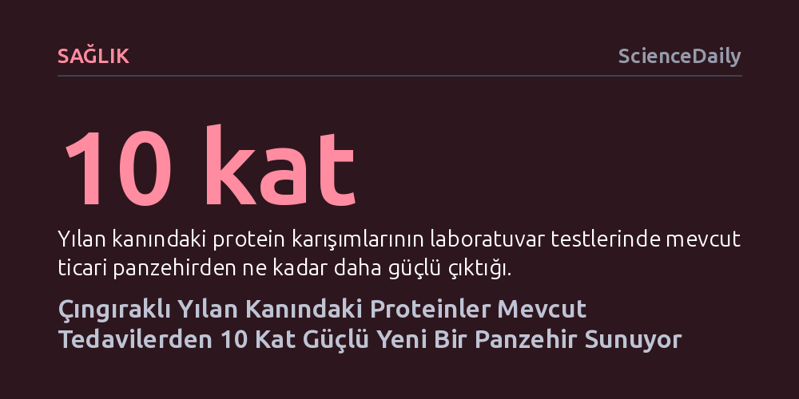

SAGLIK · ScienceDaily · 2026-09-09
Araştırmacılar, çıngıraklı yılan kanındaki savunma proteinlerini birleştirerek laboratuvar testlerinde mevcut tedavilerden 10 kat daha güçlü bir panzehir geliştirdi. Doğal protein karışımı, ölümcül toksinleri nötralize ederek daha güvenli ve ucuz yeni nesil tedavilerin önünü açıyor.
Yılan zehirlenmelerine karşı bir asırdır at ve koyun antikorlarına bel bağlayan tıp dünyası, en etkili ve risksiz panzehirin bizzat yılanların kendi kanında evrimleştiğini fark etti.

Yılan ısırıkları, özellikle tropikal ve kırsal bölgelerde her yıl on binlerce insanın hayatına mal olan ve yüz binlerce kişide kalıcı sakatlıklar bırakan en ölümcül halk sağlığı krizlerinden biridir. Tıp dünyası yaklaşık bir asırdır engereklerin kendi zehirlerine karşı dirençli olduğunu bilse de yılanların kanında onları kazara kendilerini zehirlemekten koruyan biyolojik mekanizmanın ne olduğu uzun süre aydınlatılamamıştı.
Maryland Üniversitesi'nden biyoloji profesörü Sean B. Carroll liderliğindeki araştırma ekibi, batı elmas sırtlı çıngıraklı yılanlarının kanında bu sırrın anahtarını buldu. PNAS dergisinde yayımlanan çalışmada, yılanların kan dolaşımında doğal olarak bulunan koruyucu proteinlerin bir araya getirildiğinde zehri bütünüyle etkisiz kıldığı kanıtlandı. Üstelik bu doğal moleküler kokteyl, laboratuvar testlerinde günümüzde piyasada satılan koyun kaynaklı ticari panzehirlere kıyasla yaklaşık 10 kat daha güçlü bir koruma sağladı.
Dünya Sağlık Örgütü verilerine göre zehirli yılan ısırıkları her yıl yaklaşık 80 bin ila 140 bin insanın ölümüne yol açıyor. En çok vaka ise sağlık hizmetlerine erişimin kısıtlı olduğu yoksul kırsal kesimlerde görülüyor. Günümüzde kullanılan geleneksel panzehirler hayat kurtarsa da üretim süreçleri hem meşakkatli hem de çağın gerisinde kalıyor. Bu tedaviler, zehrin at veya koyun gibi büyükbaş ve küçükbaş hayvanlara kontrollü şekilde enjekte edilmesi ve ardından hayvanın kanında oluşan antikorların toplanmasıyla elde ediliyor.
Bu geleneksel yaklaşım beraberinde ciddi kısıtlamalar getiriyor. Hayvanlardan antikor üretmek maliyetli olduğu gibi, üretim partileri arasında kalite ve etkinlik farklılıkları yaşanabiliyor. Daha da kötüsü, hayvan kökenli yabancı proteinler insanlarda şiddetli alerjik reaksiyonlara ve tehlikeli bağışıklık tepkilerine yol açabiliyor. Ayrıca mevcut antikorlar, farklı yılan türlerinin zehirlerindeki zengin toksin çeşitliliğine karşı her zaman geniş koruma sağlayamıyor. Araştırmacılar tam da bu nedenle atlara muhtaç kalmak yerine doğrudan yılanın kendi biyolojisine odaklandı.
Sean Carroll ve ekibi, ilk ipucuna 2022 yılında rastlamıştı. Çıngıraklı yılan kanında FETUA-3 adı verilen özel bir proteinin, zehirdeki en yıkıcı toksin gruplarından olan metaloproteinazları engellediğini keşfettiler. Ancak bir yılan zehri tek bir bileşikten oluşmuyor; aksine içerisinde farklı ailelere mensup yaklaşık 100 ayrı toksin proteini barındırıyor. Dolayısıyla tek bir FETUA proteininin kanamayı azaltması ya da belirli bir enzimi durdurması, ısırılan canlının hayatta kalmasını tek başına sağlayamıyordu.
Texas A&M Üniversitesi bünyesindeki Ulusal Doğal Toksinler Araştırma Merkezi uzmanlarıyla yürütülen yeni çalışmada, farklı FETUA proteinleri optimize edilmiş oranlarda harmanlandı. Ortaya çıkan çoklu karışım, tekil proteinlerin gösteremediği olağanüstü bir sinerji yaratarak yılan zehrinin öldürücü etkilerini tamamen nötralize etti. Bu koruyucu mekanizmanın milyonlarca yıllık evrimsel ayrışmaya sahip farklı engerek türlerine karşı da geniş spektrumlu koruma sunması keşfin evrensel gücünü ortaya koydu. Sean Carroll durumu şöyle özetliyor: "Doğa, bizim onlarca yıldır boğuştuğumuz bir sorunu çoktan çözmüş durumda."
Yılanların kendi savunma moleküllerinin 50 milyon yıllık evrim boyunca neredeyse hiç bozulmadan korunmuş olması, bu mekanizmanın hayati önemini kanıtlıyor. Araştırma ekibi şu anda metaloproteinazların yanı sıra engerek zehirlerindeki diğer iki temel toksin ailesini de hedef alacak benzer molekülleri haritalandırıyor. Amaç, zehrin tüm ölümcül kollarını aynı anda kesebilecek kapsamlı bir biyolojik savunma kalkanı inşa etmek.
Bu keşif, panzehir üretiminde hayvan çiftliklerine bağımlılığı bitirip laboratuvar ortamında hücre kültürüyle seri üretim yapılabilmesinin kapısını aralıyor. Carroll, yeni nesil doğa esintili panzehirlerin ilk olarak evcil hayvanları korumak üzere veteriner hekimlikte ticarileşeceğini, ardından insan tedavilerine uyarlanacağını öngörüyor. Yüksek hacimlerde üretilebilecek ucuz, güvenli ve dayanıklı bu yeni panzehirler, kırsal bölgelerdeki yüz binlerce insanın hayatını kurtarabilir.